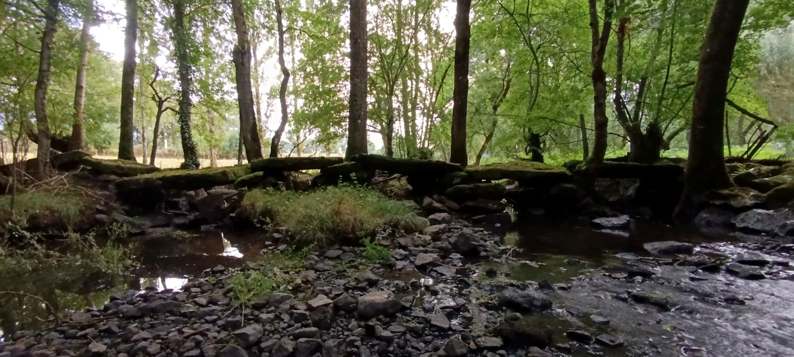

<!DOCTYPE html>
<!-- saved from url=(0097)file:///C:/Users/echar/AppData/Local/Temp/qgis2web/qgis2web_2026_08_11-21_27_02_919189/index.html -->
<html lang="en">
<head>
    <meta name="viewport" content="width=device-width,initial-scale=1,shrink-to-fit=no">
    <meta http-equiv="Content-Type" content="text/html; charset=UTF-8">
    <meta http-equiv="X-UA-Compatible" content="IE=edge">
    <meta name="viewport" content="initial-scale=1,user-scalable=no,maximum-scale=1,width=device-width">
    <meta name="mobile-web-app-capable" content="yes">
    <meta name="apple-mobile-web-app-capable" content="yes">
    <link rel="stylesheet" href="./index_files/ol.css">
    <link rel="stylesheet" href="./index_files/fontawesome-all.min.css">
    <link href="./index_files/photon-geocoder-autocomplete.min.css" rel="stylesheet">
    <link rel="stylesheet" href="./index_files/ol-layerswitcher.css">
    <link rel="stylesheet" href="./index_files/qgis2web.css">
    <style>
        html, body {
            background-color: #ffffff;
        }
        .ol-control > * {
            background-color: #f8f8f8!important;
            color: #444444!important;
            border-radius: 0px;
        }
        .ol-attribution a, .gcd-gl-input::placeholder, .search-layer-input-search::placeholder {
            color: #444444!important;
        }
        .search-layer-input-search {
            background-color: #f8f8f8!important;
        }
        .ol-control > *:focus, .ol-control >*:hover {
            background-color: rgba(248, 248, 248, 0.7)!important;
        }
        .ol-control {
            background-color: rgba(255,255,255,.4) !important;
            padding: 2px !important;
        }

        /* Mise en page : encart latéral + carte */
        html, body {
            height: 100%;
            margin: 0;
        }
        .page-layout {
            display: flex;
            height: 100vh;
            min-height: 0;
        }
        .sidebar {
            width: 380px;
            flex: 0 0 380px;
            overflow-y: auto;
            box-sizing: border-box;
            padding: 20px 24px 40px;
            background-color: #fafaf7;
            border-right: 1px solid #ddd;
            font-family: sans-serif;
            color: #333;
            line-height: 1.5;
        }
        .sidebar h1 {
            font-size: 1.3em;
            color: #2c2c2c;
            margin: 0 0 14px;
        }
        .sidebar h2 {
            font-size: 1.08em;
            color: #6b2e0f;
            border-bottom: 2px solid #e3440a;
            padding-bottom: 4px;
            margin: 22px 0 10px;
        }
        .sidebar h3 {
            font-size: 0.98em;
            color: #444;
            margin: 16px 0 6px;
        }
        .sidebar p {
            font-size: 0.92em;
            margin: 0 0 10px;
            text-align: justify;
        }
        .sidebar ul {
            margin: 0 0 10px;
            padding-left: 20px;
            font-size: 0.92em;
        }
        .sidebar li {
            margin-bottom: 6px;
        }
        .sidebar .sources-list {
            font-size: 0.85em;
            color: #555;
        }
        .sidebar-photo {
            width: 100%;
            height: auto;
            border-radius: 6px;
            display: block;
            margin: 0 0 6px;
        }
        .photo-caption {
            font-size: 0.8em;
            color: #777;
            font-style: italic;
            margin: 0 0 18px;
        }
        .legend-list {
            list-style: none;
            padding: 0;
            margin: 0;
        }
        .legend-list li {
            display: flex;
            align-items: center;
            gap: 10px;
            font-size: 0.88em;
            margin-bottom: 7px;
        }
        .legend-swatch {
            width: 15px;
            height: 15px;
            border-radius: 50%;
            flex: 0 0 15px;
            border: 1px solid rgba(0,0,0,0.15);
        }
        .map-wrapper {
            flex: 1 1 auto;
            min-width: 0;
            height: 100%;
        }
        .map-wrapper #map {
            width: 100%;
            height: 100%;
        }
        @media (max-width: 800px) {
            .page-layout {
                flex-direction: column;
                height: auto;
            }
            .sidebar {
                width: auto;
                flex: none;
                max-height: 45vh;
                border-right: none;
                border-bottom: 1px solid #ddd;
            }
            .map-wrapper {
                height: 60vh;
            }
        }
        </style>
    </head>
  <body>
        <div class="page-layout">
            <!-- Encart d'information -->
            <aside class="sidebar">
                <h1>Carte du patrimoine archéologique de la vallée du Blaison</h1>

                
                <p class="photo-caption">Le pont mégalithique de la Guérinière, sur le Blaison.</p>

                <h2>Le projet</h2>
                <p>Cette carte recense le patrimoine archéologique et historique de la vallée du Blaison, ce petit affluent rive gauche de la Maine qui sépare, sur une dizaine de kilomètres, le secteur de Vieillevigne et de l'Herbergement (Loire-Atlantique) de celui de Saint-Hilaire-de-Loulay et Montaigu (Vendée).</p>
                <p>Réalisée sous QGIS, elle recense une trentaine de sites répartis en cinq grandes familles : mottes castrales, postes de défense, planches (passerelles) mégalithiques, sites archéologiques et lieux particuliers. Elle est publiée sous deux formes : une version interactive consultable en ligne, et une version imprimée au format A1 conçue pour les Journées Européennes du Patrimoine.</p>
                <p>Ce travail a été commandé par une association locale de Vieillevigne, en lien avec les recherches menées sur le patrimoine jacquaire et archéologique de la région.</p>

                <h2>Contexte historique et archéologique</h2>

                <h3>Une frontière ancienne</h3>
                <p>Le Blaison n'est pas qu'un ruisseau : dès le haut Moyen Âge, il sert de limite entre le Poitou et la Bretagne. La toute première mention écrite du cours d'eau remonte à 844, dans la Chronique de Nantes (rédigée vers 1050) : le duc d'Aquitaine Begon y est décrit comme tué par les Bretons « sur les gués du Blaison », pendant les troubles du début du IX<sup>e</sup> siècle. Selon l'édition de René Merlet (1896), cet épisode pourrait se situer précisément au passage à gué bordé d'une « planche » de pierres plates, entre la Petite Roulière et la Guittonnière — c'est-à-dire l'un des ponts mégalithiques encore visibles aujourd'hui.</p>

                <h3>Sur le tracé d'une voie romaine</h3>
                <p>La zone est traversée par la voie romaine reliant Nantes à Saintes (Rezé à Rom, en direction de Limoges), qui passe par la Guérinière, Vieillevigne, le Bignon puis le village du Pâtis avant de rejoindre Durinum (Saint-Georges-de-Montaigu). Cet axe est aujourd'hui globalement doublé par l'A83, dont la construction a donné lieu à un suivi archéologique dans les années 1990.</p>

                <h3>Des occupations qui s'étalent sur huit millénaires</h3>
                <p>Les recherches menées sur le secteur, notamment la fouille préventive Éveha de 2020 sur le site du Pâtis (rapport Dufay-Garel et al., 2022), ont mis au jour une séquence d'occupation exceptionnellement longue :</p>
                <ul>
                    <li><strong>Mésolithique</strong> (vers 8000 av. n. è.) : quelques amas de débitage au nord-est du secteur, antérieurs au Néolithique.</li>
                    <li><strong>Second âge du Fer / La Tène</strong> (III<sup>e</sup>–I<sup>er</sup> s. av. n. è.) : un ensemble monumental gaulois au Pâtis — un enclos carré de 83 m de côté, avec porche d'entrée à l'ouest, organisé autour d'un vaste bâtiment sur cour à galeries périphériques. Cette découverte s'inscrit dans une série très restreinte d'ensembles similaires connus en Gaule intérieure.</li>
                    <li><strong>Haut-Empire</strong> (I<sup>er</sup>–IV<sup>e</sup> s.) : réoccupation de l'enclos, mise en place d'un axe de circulation vers la fin du I<sup>er</sup> siècle, et un fanum (petit temple gallo-romain à cella centrale) à moins d'un kilomètre du site.</li>
                    <li><strong>Haut Moyen Âge</strong> : nouvelle occupation en périphérie du site du Pâtis ; c'est aussi la période à laquelle remonte la première mention écrite du Blaison (voir plus haut).</li>
                    <li><strong>Période médiévale et moderne</strong> : mottes castrales (la Motte de l'Herbergement, la Motte de Bouffèré, le Pré de la Motte), postes de défense (le Châtellier, la Gachère, la Citadelle...), pont de Senard, moulin et pigeonnier de l'Écornerie, et bien sûr les planches mégalithiques.</li>
                </ul>

                <h3>Les ponts mégalithiques, une énigme non résolue</h3>
                <p>Le pont — ou passerelle, ou planche — mégalithique de la Guérinière est le plus emblématique de ces derniers : environ 30 m de long, constitué de piles en pierre sèche supportant de grandes dalles de pierre calibrées, doublé en aval d'un gué empierré. Sa datation reste incertaine : aucun mobilier, mortier ou charbon n'a permis de la préciser, et rien ne prouve qu'il corresponde exactement au franchissement utilisé à l'époque gallo-romaine plutôt qu'à un aménagement postérieur. L'hypothèse d'un usage par les pèlerins de Saint-Jacques-de-Compostelle, en route vers Limoges puis Saint-Léonard-de-Noblat, est également évoquée. Des ouvrages comparables sont connus dans la région (Petite Roulière, Tuderrière à Apremont, Petite Boulogne à Saint-Étienne-du-Bois), mais aucun n'est daté avec certitude — ce qui en fait un axe de recherche à part entière plutôt qu'un simple élément de décor sur la carte.</p>

                <h2>Légende</h2>
                <ul class="legend-list">
                    <li><span class="legend-swatch" style="background:#30123b;"></span>Type indéterminé</li>
                    <li><span class="legend-swatch" style="background:#4686fb;"></span>Fanum</li>
                    <li><span class="legend-swatch" style="background:#1be5b5;"></span>Lieux particuliers</li>
                    <li><span class="legend-swatch" style="background:#dae336;"></span>Moulin ; Pigeonnier</li>
                    <li><span class="legend-swatch" style="background:#fbb938;"></span>Occupation</li>
                    <li><span class="legend-swatch" style="background:#fb7e21;"></span>Passerelle mégalithique</li>
                    <li><span class="legend-swatch" style="background:#e3440a;"></span>Pont</li>
                    <li><span class="legend-swatch" style="background:#b81d02;"></span>Poste de défense, Guerche, Motte castrale, Maison forte</li>
                    <li><span class="legend-swatch" style="background:#7a0403;"></span>Site archéologique</li>
                </ul>

                <h2>Sources</h2>
                <ul class="sources-list">
                    <li>CAZAUBON L., <em>Patrimoine jacquaire en péril : le Pont mégalithique de la Guérinière sur le Blaison</em>, 2023.</li>
                    <li>DUFAY-GAREL Y. et al., <em>Vieillevigne (44), Le Pâtis — Tranche 1A. Un ensemble monumental gaulois dans la vallée de la Maine</em>, rapport final d'opération archéologique, Éveha / SRA Pays de la Loire, 2022.</li>
                    <li>MERLET R. (éd.), <em>La Chronique de Nantes (570 env.–1049)</em>, Alphonse Picard et Fils, 1896.</li>
                    <li>GÉRARD A., <em>Les Vendéens, des origines à nos jours</em>, Centre Vendéen de Recherches Historiques, 2018.</li>
                    <li>GOURAUD G., publications diverses sur les ponts mégalithiques du Blaison (1981, 2003, 2016, 2022).</li>
                </ul>
            </aside>

            <!-- La carte -->
            <div class="map-wrapper">
                <div id="map">
                    <div id="popup" class="ol-popup">
                        <a href="#" id="popup-closer" class="ol-popup-closer"></a>
                        <div id="popup-content"></div>
                    </div>
                </div>
            </div>
        </div>
        <script src="./index_files/qgis2web_expressions.js"></script>
        <script src="./index_files/functions.js"></script>
        <script src="./index_files/ol.js"></script>
        <script src="./index_files/ol-layerswitcher.js"></script>
        <script src="./index_files/photon-geocoder-autocomplete.min.js"></script>
        <script src="./index_files/olms.js"></script>
        <script src="./index_files/PontMegalithiqueGueriniereJEP2026sites_1.js"></script>
        <script src="./index_files/PontMegalithiqueGueriniereJEP2026sites_1_style.js"></script>
        <script src="./index_files/layers.js" type="text/javascript"></script> 
        <script src="./index_files/Autolinker.min.js"></script>
        <script src="./index_files/qgis2web.js"></script>
    
<!-- Script de correction de taille -->
        <script>
            window.addEventListener('load', function() {
                // Force le redimensionnement de la carte une fois la page chargée
                setTimeout(function() {
                    var map = document.getElementById('map');
                    // Si la carte a bien été créée, on déclenche un redimensionnement
                    if (map && map.__ol_map) {
                        map.__ol_map.updateSize();
                    }
                }, 100); // Petit délai pour laisser le temps au CSS de s'appliquer
            });
            
            // Gestion du redimensionnement de la fenêtre
            window.addEventListener('resize', function() {
                setTimeout(function() {
                    var map = document.getElementById('map');
                    if (map && map.__ol_map) {
                        map.__ol_map.updateSize();
                    }
                }, 100);
            });
        </script>
</body></html>